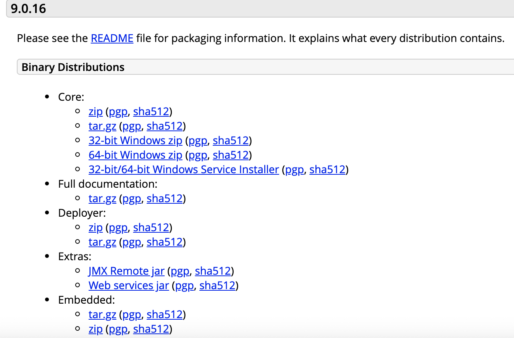
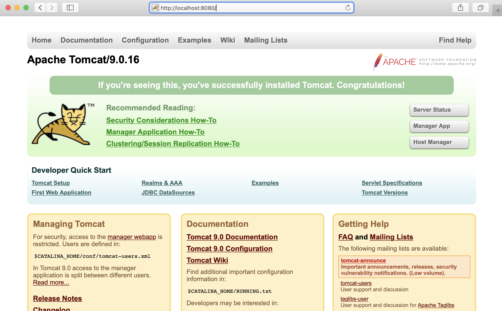

构建工具
什么是 Ant?
什么是 Maven?
Maven 是最流行的 Java 项目构建系统。
目前，绝大多数开发人员都把 Ant 当作 Java 编程项目的标准构建工具。遗憾的是，Ant 的项目管理工具（作为 make 的替代工具）不能满足绝大多数开发人员的需要。通过检查 Ant 构建文件，很难发现项目的相关性信息和其它元信息（如开发人员／拥有者、版本或站点主页）。
Maven 除了以程序构建能力为特色之外，还提供 Ant 所缺少的高级项目管理工具。由于 Maven 的缺省构建规则有较高的可重用性，所以常常用两三行 Maven 构建脚本就可以构建简单的项目，而使用 Ant 则需要十几行。事实上，由于 Maven 的面向项目的方法，许多 Apache Jakarta 项目现在使用 Maven，而且公司项目采用 Maven 的比例在持续增长。
Maven vs Ant
那么，Maven 和 Ant 有什么不同呢？在回答这个问题以前，我要强调一点：Maven 和 Ant 针对构建问题的两个不同方面。Ant 为 Java 技术开发项目提供跨平台构建任务。Maven 本身描述项目的高级方面，它从 Ant 借用了绝大多数构建任务。因此，由于 Maven 和 Ant 代表两个差异很大的工具，所以我将只说明这两个工具的等同组件之间的区别，如表 1 所示。
表 1. Maven vs Ant
| Maven | Ant | |
|---|---|---|
| 标准构建文件 | project.xml 和 maven.xml | build.xml |
| 特性处理顺序 | ${maven.home}/bin/driver.properties |
${project.home}/project.properties
${project.home}/build.properties
${user.home}/build.properties
通过 -D 命令行选项定义的系统特性 | 通过 -D 命令行选项定义的系统特性 由 任务装入的特性 |
| 构建规则 | 构建规则更为动态（类似于编程语言）；它们是基于 Jelly 的可执行 XML。 | 构建规则或多或少是静态的，除非使用 |
相关开发环境下的 Maven 插件：http://mevenide.codehaus.org/
Maven 是一个项目管理工具，它包含了一个项目对象模型 (Project Object Model)，一组标准集合，一个项目生命周期(Project Lifecycle)，一个依赖管理系统(Dependency Management System)，和用来运行定义在生命周期阶段(phase)中插件(plugin)目标(goal)的逻辑。当你使用 Maven 的时候，你用一个明确定义的项目对象模型来描述你的项目，然后 Maven 可以应用横切的逻辑，这些逻辑来自一组共享的（或者自定义的）插件。 Maven 有一个生命周期，当你运行 mvn install 的时候被调用。这条命令告诉 Maven 执行一系列的有序的步骤，直到到达你指定的生命周期。遍历生命周期旅途中的一个影响就是，Maven 运行了许多默认的插件目标，这些目标完成了像编译和创建一个 JAR 文件这样的工作。 此外，Maven 能够很方便的帮你管理项目报告，生成站点，管理 JAR 文件，等等。
什么是 Gradle?
Gradle是一个基于Apache Ant和Apache Maven概念的项目自动化构建开源工具。它使用一种基于Groovy的特定领域语言(DSL)来声明项目设置，抛弃了基于XML的各种繁琐配置。 面向Java应用为主。当前其支持的语言限于Java、Groovy、Kotlin和Scala，计划未来将支持更多的语言。
2019 Maven vs Gradle
- 灵活性 谷歌采用gradle构建andriod不是因为构建脚本就是代码，而是因为gradle是可扩展的。比如gradle允许调用C/C++进行native 开发。另外，gradle可以扩展到其他生态圈，比如可以嵌入其他系统，因为gradle提供了一套tooling api。 Gradle和maven都遵循约定大于配置，但是maven的模型比较僵硬，一些个性化配置很难实现甚至不可能。
-
性能 加快build速度对项目发布很重要，gradle和maven都采用了并行编译，并行依赖处理等方案。gradle的最大不同是避免不需要的工作和渐进性。主要采用以下三点：
- a. 渐进性 gradle 记录任务的输入和输出，仅仅运行必须的，尽可能仅仅处理更高的文件
- b. 利用cache gradle对于相同的输入，重用其他gradle build输出的cache，对于跨机器的构建也可以。
- c. Daemon进程 gradle长期运行一个进程把build信息保存在内存
3 . 用户体验 gradle提供了Kotlin-based DSL 提升用户体验。而且gradle提供了一种交互式UIbuild scans，可以进行debug，优化build性能 4.依赖管理 两者都提供了内置的依赖管理机制，都能本地缓存依赖或者远程下载。 maven 重写依赖仅仅允许修改版本，但是gradle提供了 “依赖选择”和“替代机制”（声明一次，整个工程都生效），替换机制可以利用多个project生成复合build。
下面的例子拒绝1.5 version
Example 25.64. Component selection rule
build.gradle
configurations {
rejectConfig {
resolutionStrategy {
componentSelection {
// Accept the highest version matching the requested version that isn't '1.5'
all { ComponentSelection selection ->
if (selection.candidate.group == 'org.sample' && selection.candidate.module == 'api' && selection.candidate.version == '1.5') {
selection.reject("version 1.5 is broken for 'org.sample:api'")
}
}
}
}
}
}
dependencies {
rejectConfig "org.sample:api:1.+"
}
替代机制如下，用groovy替代groovy-all，用log4j-over-slf4j替代log4j
Example 25.53. Changing dependency group and/or name at the resolution
build.gradle
configurations.all {
resolutionStrategy.eachDependency { DependencyResolveDetails details ->
if (details.requested.name == 'groovy-all') {
//prefer 'groovy' over 'groovy-all':
details.useTarget group: details.requested.group, name: 'groovy', version: details.requested.version
}
if (details.requested.name == 'log4j') {
//prefer 'log4j-over-slf4j' over 'log4j', with fixed version:
details.useTarget "org.slf4j:log4j-over-slf4j:1.7.10"
}
}
}
基于JVM的编程语言
什么是 Groovy?
Groovy是一种基于JVM（Java虚拟机）的敏捷开发语言，它结合了Python、Ruby和Smalltalk的许多强大的特性，Groovy 代码能够与 Java 代码很好地结合，也能用于扩展现有代码。由于其运行在 JVM 上的特性，Groovy 可以使用其他 Java 语言编写的库。
https://baike.baidu.com/item/Groovy
2019年记录： 最新版本为 2.5 最近还在持续发展，会发布3.0 支持JDK11
什么是 Scala?
Scala是一门多范式的编程语言，一种类似java的编程语言 [1] ，设计初衷是实现可伸缩的语言 [2] 、并集成面向对象编程和函数式编程的各种特性。
特点
- Scala 是一门多范式（multi-paradigm）的编程语言，设计初衷是要集成面向对象编程和函数式编程的各种特性。
- Scala 运行在Java虚拟机上，并兼容现有的Java程序。
- Scala 源代码被编译成Java字节码，所以它可以运行于JVM之上，并可以调用现有的Java类库。
版本最新记录
https://github.com/scala/scala/releases
- 2019-02-19 记录到 https://scala-lang.org/ 官方网站最新版本为 2.12.8 发布于 2018.11.04
流行服务器
Tomcat
发音说明
Apache Tomcat
服务器介绍
Tomcat是Apache 软件基金会（Apache Software Foundation）的Jakarta 项目中的一个核心项目，由Apache、Sun 和其他一些公司及个人共同开发而成。因为Tomcat 技术先进、性能稳定，而且免费，因而深受Java 爱好者的喜爱并得到了部分软件开发商的认可，成为目前比较流行的Web 应用服务器。 目前tomcat最新版本是9.0.16 (2019-02-20)
Tomcat 9.0.16 安装
官方网址：https://tomcat.apache.org/

说明：
- Binary Distributions和Source Code Distributions: 分别是二进制版本和源代码包。
- Core: 是Tomcat正式的二进制发布版本，一般做开发或学习的时应该下载Core下的对应安装包。
- Deployer: 是基于Tomcat的web应用的发布器，就是在把写好的JavaEE应用发布到Tomcat的时候可以使用Deployer来动态的发布。所以它不是真正的Tomcat二进制版本，它只是一个用以发布基于Tomcat的Web应用的发布工具而已
Step 1
- 我们此处下载core下面的zip或tar.gz压缩包即可。
- 将下载好的tomcat安装包，防止到指定的路径，此处笔者放置在新建目录tomcat下。
/Users/用户名/apache/tomcat/9.x/
Step 2
解压缩 apache-tomcat-9.0.16.zip , 此时tomcat9解压目录为:
/Users/用户名/apache/tomcat/9.x/apache-tomcat-9.0.16/
Step 3
打开terminal终端，进入tomcat9解压缩目录
> cd /Users/用户名/apache/tomcat/9.x/apache-tomcat-9.0.16/
进入bin目录：
> cd /Users/用户名/apache/tomcat/9.x/apache-tomcat-9.0.16/bin/
执行 startup.sh 尝试启动tomcat。
> ./startup.sh
如果出现以下提示：Permission denied, 说明权限异常。
-bash: ./startup.sh: Permission denied
解决方案：给Tomcat启动命令校本赋予权限
> sudo chmod 755 /Users/用户名/apache/tomcat/9.x/apache-tomcat-9.0.16/bin/*.sh
然后，再次执行启动脚本。
> ./startup.sh
打开浏览器，访问 http://localhost:8080/, 如果出现如下页面即表示Tomcat成功启动。

Java开源包管理网站
流行Framework
Spring
Spring MVC
Spring MVC属于SpringFrameWork的后续产品，已经融合在Spring Web Flow里面。Spring 框架提供了构建 Web 应用程序的全功能 MVC 模块。使用 Spring 可插入的 MVC 架构，从而在使用Spring进行WEB开发时，可以选择使用Spring的Spring MVC框架或集成其他MVC开发框架，如Struts1(现在一般不用)，Struts 2(一般老项目使用)等。
框架
通过策略接口，Spring 框架是高度可配置的，而且包含多种视图技术，例如 JavaServer Pages（JSP）技术、Velocity、Tiles、iText和POI。Spring MVC 框架并不知道使用的视图，所以不会强迫开发者只使用 JSP 技术。Spring MVC 分离了控制器、模型对象、过滤器以及处理程序对象的角色，这种分离让它们更容易进行定制。
优点
Lifecycle for overriding binding, validation, etc，易于同其它View框架（Tiles等）无缝集成，采用IOC便于测试。 它是一个典型的教科书式的mvc构架，而不像struts等都是变种或者不是完全基于mvc系统的框架，对于初学者或者想了解mvc的人来说我觉得 spring是最好的，它的实现就是教科书！第二它和tapestry一样是一个纯正的servlet系统，这也是它和tapestry相比 struts所具有的优势。而且框架本身有代码，看起来容易理解。
单元测试
关于Spring MVC Controller 层的单元测试 测试准备工作： 1、搭建测试Web环境
@RunWith(UnitilsJUnit4TestClassRunner.class)
@SpringApplicationContext({
"classpath:*.xml","file:src/main/webapp/WEB-INF/spring-configuration/*.xml",
"file:src/main/webapp/WEB-INF/*.xml"
})
2、注入Controller 类
@Controller
BeanControllercontroller;
3、编写测试数据 测试数据的文件名一定要与测试类的文件名相同，比如测试数据BeanControllerTest.xml ，测试类 BeanControllerTest。
4、注入测试数据
@Test
@DataSet
publicvoidtestBean(){}
常用注解
MVC已经是现代Web开发中的一个很重要的部分，下面介绍一下Spring MVC的一些使用心得。 之前的项目比较简单，多是用JSP 、Servlet + JDBC 直接搞定，在项目中尝试用 Struts(Struts MVC)+Spring+Hibernate, 严格按照分层概念驱动项目开发，因项目需求一直不断变化，功能不断扩充、增强，技术构建也几经改变到目前有个稳定的应用，体会了很多感受，这次先对 Spring MVC 层进行一些个人总结。 MVC作为WEB项目开发的核心环节，正如三个单词的分解那样，C（控制器）将V（视图、用户客户端）与M（javaBean:封装数据）分开构成了MVC ，这边不去讨论项目中是否应用MVC ，也不针对MVC的实现原理进行讲解，而是探讨实践中如何从应用SSH, 到Struts(Struts MVC)+Spring+Hibernate的演化过程。 先看 Struts 如何与 Spring 结合处理一次简单的请求响应代码，前台可以设为用 AJAX 调用：
Spring Boot
Spring Boot是由Pivotal团队提供的全新框架，其设计目的是用来简化新Spring应用的初始搭建以及开发过程。该框架使用了特定的方式来进行配置，从而使开发人员不再需要定义样板化的配置。通过这种方式，Spring Boot致力于在蓬勃发展的快速应用开发领域(rapid application development)成为领导者。
特点
- 创建独立的Spring应用程序
- 嵌入的Tomcat，无需部署WAR文件
- 简化Maven配置
- 自动配置Spring
- 提供生产就绪型功能，如指标，健康检查和外部配置
- 绝对没有代码生成并且对XML也没有配置要求 [1]
安装步骤
从最根本上来讲，Spring Boot就是一些库的集合，它能够被任意项目的构建系统所使用。简便起见，该框架也提供了命令行界面，它可以用来运行和测试Boot应用。框架的发布版本，包括集成的CLI（命令行界面），可以在Spring仓库中手动下载和安装。一种更为简便的方式是使用Groovy环境管理器（Groovy enVironment Manager，GVM），它会处理Boot版本的安装和管理。Boot及其CLI可以通过GVM的命令行gvm install springboot进行安装。在OS X上安装Boot可以使用Homebrew包管理器。为了完成安装，首先要使用brew tap pivotal/tap切换到Pivotal仓库中，然后执行brew install springboot命令。 要进行打包和分发的工程会依赖于像Maven或Gradle这样的构建系统。为了简化依赖图，Boot的功能是模块化的，通过导入Boot所谓的“starter”模块，可以将许多的依赖添加到工程之中。为了更容易地管理依赖版本和使用默认配置，框架提供了一个parent POM，工程可以继承它。
<?xml version="1.0" encoding="utf-8"?>
<project xmlns="http://maven.apache.org/POM/4.0.0" xmlns:xsi="http://www.w3.org/2001/XMLSchema-instance" xsi:schemaLocation="http://maven.apache.org/POM/4.0.0 http://maven.apache.org/xsd/maven-4.0.0.xsd">
<modelVersion>4.0.0</modelVersion>
<groupId>com.example</groupId>
<artifactId>myproject</artifactId>
<version>1.0.0-SNAPSHOT</version>
<!-- Inherit defaults from Spring Boot -->
<parent>
<groupId>org.springframework.boot</groupId>
<artifactId>spring-boot-starter-parent</artifactId>
<version>1.0.0.RC1</version>
</parent>
<!-- Add typical dependencies for a web application -->
<dependencies>
<dependency>
<groupId>org.springframework.boot</groupId>
<artifactId>spring-boot-starter-web</artifactId>
</dependency>
<dependency>
<groupId>org.springframework.boot</groupId>
<artifactId>spring-boot-starter-actuator</artifactId>
</dependency>
</dependencies>
<repositories>
<repository>
<id>spring-snapshots</id>
<url>http://repo.spring.io/libs-snapshot</url>
</repository>
</repositories>
<pluginRepositories>
<pluginRepository>
<id>spring-snapshots</id>
<url>http://repo.spring.io/libs-snapshot</url>
</pluginRepository>
</pluginRepositories>
<build>
<plugins>
<plugin>
<groupId>org.springframework.boot</groupId>
<artifactId>spring-boot-maven-plugin</artifactId>
</plugin>
</plugins>
</build>
</project>
Spring Cloud
Spring Cloud是一系列框架的有序集合。它利用Spring Boot的开发便利性巧妙地简化了分布式系统基础设施的开发，如服务发现注册、配置中心、消息总线、负载均衡、断路器、数据监控等，都可以用Spring Boot的开发风格做到一键启动和部署。Spring Cloud并没有重复制造轮子，它只是将目前各家公司开发的比较成熟、经得起实际考验的服务框架组合起来，通过Spring Boot风格进行再封装屏蔽掉了复杂的配置和实现原理，最终给开发者留出了一套简单易懂、易部署和易维护的分布式系统开发工具包。
Spring Cloud组成
Spring Cloud的子项目，大致可分成两类，一类是对现有成熟框架”Spring Boot化”的封装和抽象，也是数量最多的项目；第二类是开发了一部分分布式系统的基础设施的实现，如Spring Cloud Stream扮演的就是kafka, ActiveMQ这样的角色。对于我们想快速实践微服务的开发者来说，第一类子项目就已经足够使用，如：
- Spring Cloud Netflix : 是对Netflix开发的一套分布式服务框架的封装，包括服务的发现和注册，负载均衡、断路器、REST客户端、请求路由等。
- Spring Cloud Config : 将配置信息中央化保存, 配置Spring Cloud Bus可以实现动态修改配置文件
- Spring Cloud Bus : 分布式消息队列，是对Kafka, MQ的封装
- Spring Cloud Security : 对Spring Security的封装，并能配合Netflix使用
- Spring Cloud Zookeeper : 对Zookeeper的封装，使之能配置其它Spring Cloud的子项目使用
- Spring Cloud Eureka : Spring Cloud Eureka 是 Spring Cloud Netflix 微服务套件中的一部分，它基于Netflix Eureka 做了二次封装，主要负责完成微服务架构中的服务治理功能。
Spring Cloud前景
Spring Cloud对于中小型互联网公司来说是一种福音，因为这类公司往往没有实力或者没有足够的资金投入去开发自己的分布式系统基础设施，使用Spring Cloud一站式解决方案能在从容应对业务发展的同时大大减少开发成本。同时，随着近几年微服务架构和Docker容器概念的火爆，也会让Spring Cloud在未来越来越“云”化的软件开发风格中立有一席之地，尤其是在目前五花八门的分布式解决方案中提供了标准化的、全站式的技术方案，意义可能会堪比当年Servlet规范的诞生，有效推进服务端软件系统技术水平的进步。